CampusLift TT: how much does a CDN help?
The same site, tested on a plain shared host and on a CDN, loads its main content about 58% faster on the CDN and responds 83% sooner.
What was compared
| Without CDN | With CDN | |
|---|---|---|
| Host | ProFreeHost (free shared hosting, single origin server) | GitHub Pages (served through Fastly’s global CDN) |
| Address | campuslift.liveblog365.com | darkshadow1451.github.io/Ezekiel.github.io |
| Evidence it is a plain origin | CSS and images came back with Server: openresty and no CDN headers (see Evidence) | Edge delivery with a 51 ms first byte from the test location |
Method
Both addresses were tested with the DebugBear Website Speed Test on the same day, with identical settings: US East, 100 Mbps, 2 ms round-trip time, fast device, Chrome 157, Lighthouse 13.5.0, desktop. Accessibility, SEO and Best Practices were measured with Chrome DevTools Lighthouse, because DebugBear’s free tool only reports performance.
Results
| Metric | Without CDN | With CDN | Change |
|---|---|---|---|
| Lighthouse Performance | 99 | 100 | +1 |
| Time to first byte | 302 ms | 51 ms | 83% faster |
| First Contentful Paint | 756 ms | 325 ms | 57% faster |
| Largest Contentful Paint | 876 ms | 369 ms | 58% faster |
| Speed Index | 0.7 s | 0.3 s | 57% faster |
| Total Blocking Time | 0 ms | 0 ms | no change |
| Cumulative Layout Shift | 0.003 | 0.002 | negligible |
| Page weight | 529 KB | 389 KB | see limitations |
Lighthouse category scores (CDN version, Chrome DevTools)
| Run | Performance | Accessibility | Best Practices | SEO |
|---|---|---|---|---|
| Mobile | 100 | 100 | 100 | 100 |
| Desktop | 98 | 100 | 100 | 100 |
Why the CDN is faster
- Shorter distance. A CDN answers from a server near the visitor, so the first byte arrived in 51 ms instead of 302 ms. Every other metric starts later when the first byte is late, which is why FCP and LCP improved by about the same amount.
- Cached static files. CSS, JavaScript and images are stored at the edge, so the origin does not have to produce them again for each visit.
- No effect on blocking time or layout shift. Those depend on the page’s own code, which is identical on both hosts, so they stay at or near zero.
Caching and versioning
CSS and JavaScript links end in ?v=1.6, so changing the number forces browsers to fetch the new file. The _headers file sets a one-year immutable cache on /css, /js and /img, and revalidation on HTML. GitHub Pages ignores _headers, which is why Lighthouse still reports “Use efficient cache lifetimes” on the CDN version. ProFreeHost sent its own 30-day max-age on CSS and images instead. Hosts that read _headers, such as Netlify and Cloudflare Pages, would apply the policy as written.
Limitations
- The hero image differs. It was 161 KB on ProFreeHost and 103 KB on GitHub Pages, which accounts for 58 KB of the 140 KB page-weight gap and may account for part of the LCP gap.
- Code versions differ slightly. The GitHub Pages test loaded
?v=1.5files and ProFreeHost loaded?v=1.6. - The baseline is not a pure no-CDN test. The HTML on ProFreeHost carried Cloudflare headers (
Cf-Ray, status DYNAMIC, no caching) added by the host. The CSS and images carried none, so static files came straight from the origin. - One run per site. DebugBear’s free test gives a single result, so small differences could be noise. The large TTFB, FCP and LCP gaps are well beyond that.
- Two different hosts. Server hardware and software also differ, not only CDN presence.
Conclusion
The CDN version responded 251 ms sooner and showed its main content more than twice as fast. Both versions already score highly because the site is small, so the gain is clearest in server response and paint timing and does not change the page’s code-driven metrics.
Evidence
Response headers on the non-CDN host

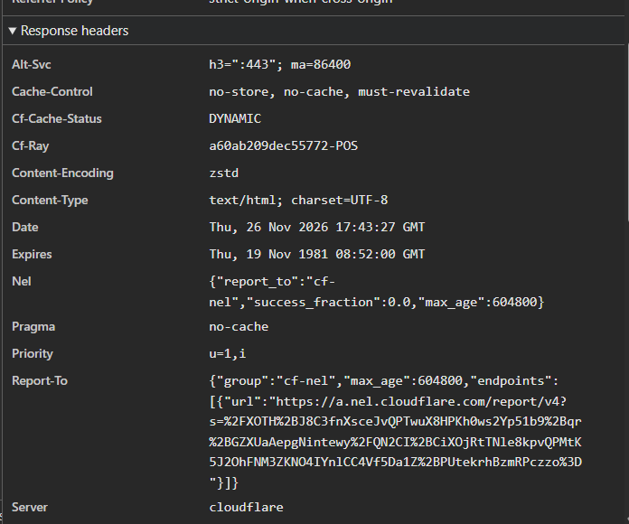

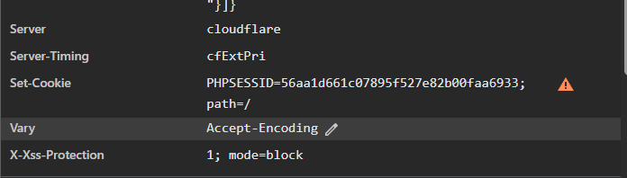

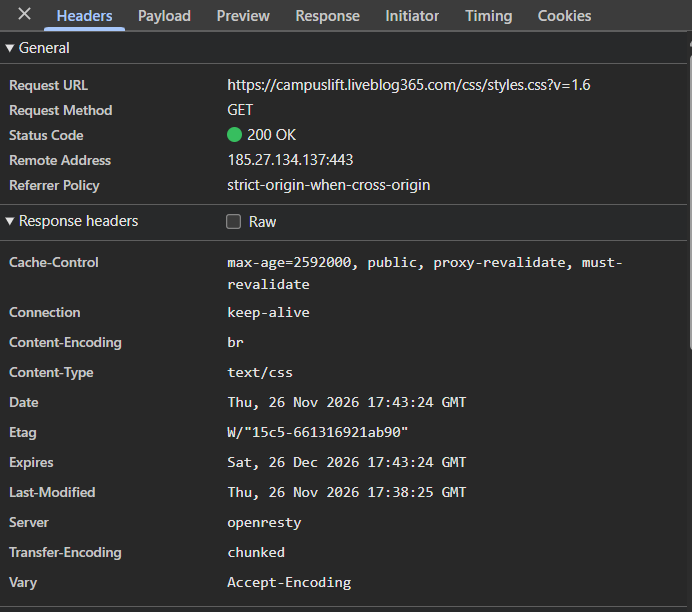

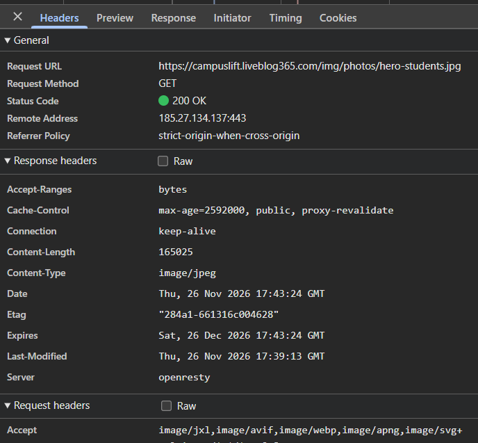
Lighthouse, CDN version

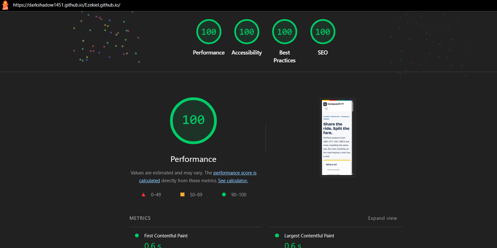

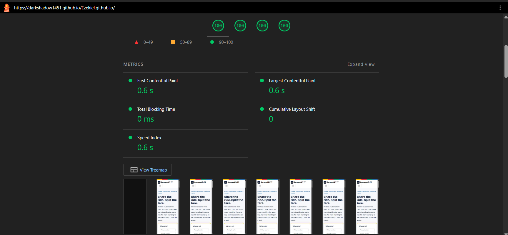

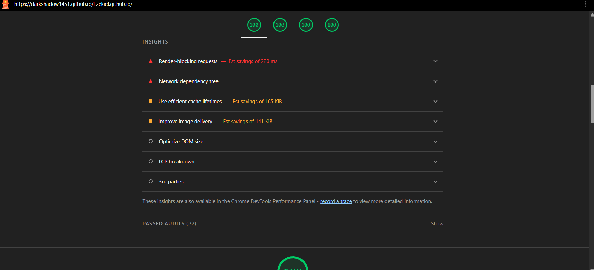

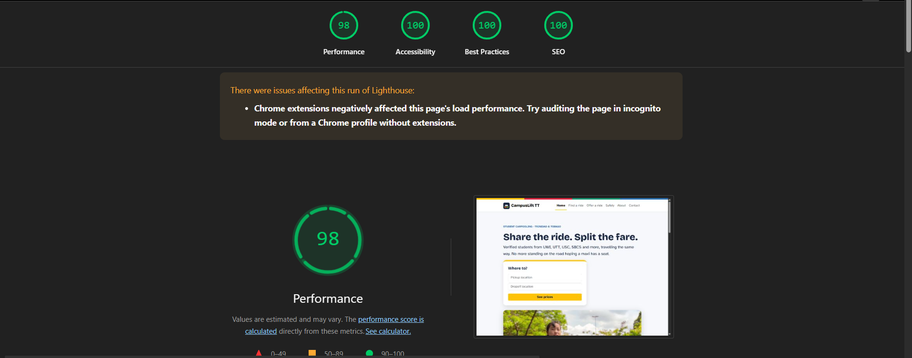

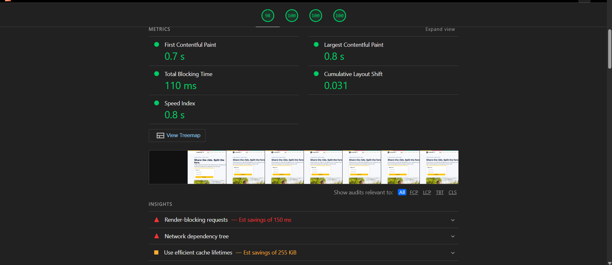

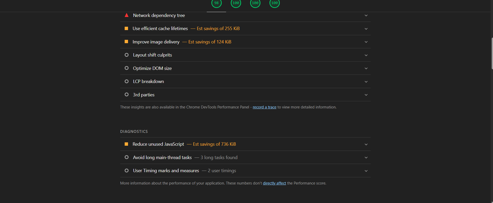

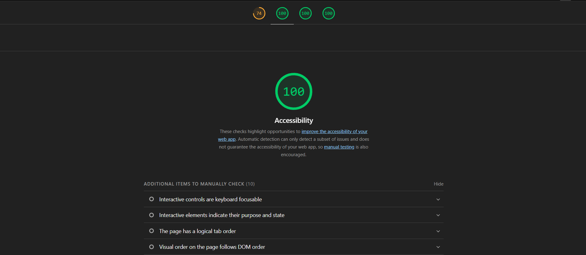

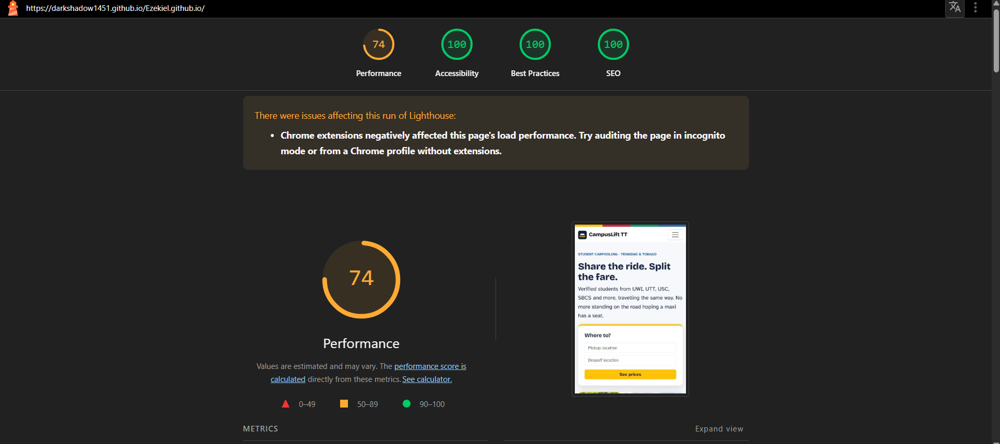

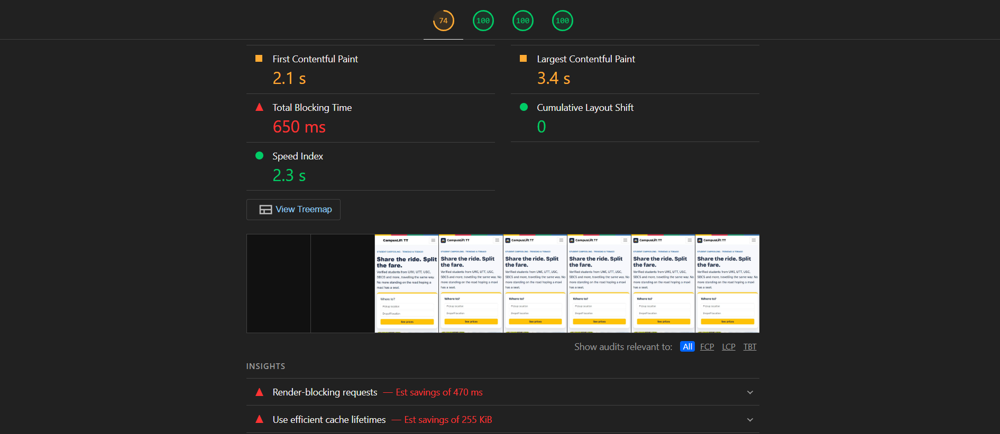